Herencia¶
Cuando tenemos una clase con una serie de características y nuestro programa se actualiza o amplia, tal vez se necesita de una clase con unas características similares, como por ejemplo, Ordenador, posee un ram, cpu, tamaño de disco, etc.
Si ahora queremos añadir la clase Tablet Android en nuestro sistema, como posee todas esas características de ordenador además de algunas específicas, copiaríamos todo lo que hay en ordenador y agregaríamos lo que fuera específico para Tablet. Lo mismo tendríamos que realizar si añadiéramos Pórtatil Mac. Como te habrás dado cuenta, este proceso genera mucho código repetido. Y arreglar un error en él puede ser también complicado. Para ello utilizamos la herencia.
¿Cómo se relacionan las clases entre sí? En Java, y en cualquier otro lenguaje orientado a objetos, las clases se organizan en una jerarquía de clases. Una jerarquía de clases es como un árbol al revés. En lo más alto de la jerarquía se encuentra la clase más general, en Java, la clase Object. Las clases debajo de Object en la jerarquía se conocen como sus subclases. Dado que todos los objetos que usamos en nuestros programas pertenecen a una clase u otra, esto es como decir que todos los objetos son Object.
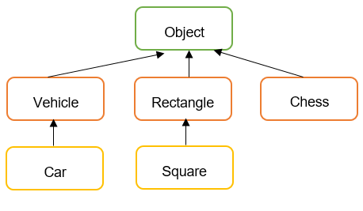
En Java, todas las clases heredan de la clase java.lang.Object.
La Figura muestra el concepto de jerarquía de clases. Observa que la clase Object se encuentra en la parte superior de la jerarquía. Es la clase más generalizada. Tiene características que son comunes a todos los objetos Java. A medida que desciende en la jerarquía, las clases se vuelven cada vez más específicas. Un rectángulo es un objeto, pero contiene atributos (largo y ancho) que son comunes a todos los rectángulos, pero no a otros objetos de la jerarquía. Por ejemplo, un objeto Vehicle no tiene necesariamente una longitud y una anchura.
También está la clase Square en la jerarquía. Un Square (cuadrado) es un tipo especial de rectángulo, es decir, uno cuyo largo es igual a su ancho.
Superclase y subclase
Usando la terminología asociada con este tipo de jerarquía, decimos que la clase Rectangle es una subclase de la clase Object. La clase Square es una subclase de Rectangle y Object. Se dice que las clases que se encuentran por encima de una clase dada en la jerarquía son sus superclases.
Por lo tanto, la clase Rectangle y también Object es una superclase de la clase Square.
En general, decimos que una subclase extiende una superclase, lo que significa que agrega elementos adicionales (atributos y / o métodos) a los contenidos en sus superclases. Como el caso de la clase
Squareque agrega la característica de que su largo y ancho son siempre iguales.
Hay tres conjuntos de terminología para describir las relaciones de herencia:
- padre / hijo
- clase base / clase derivada
- superclase / subclase
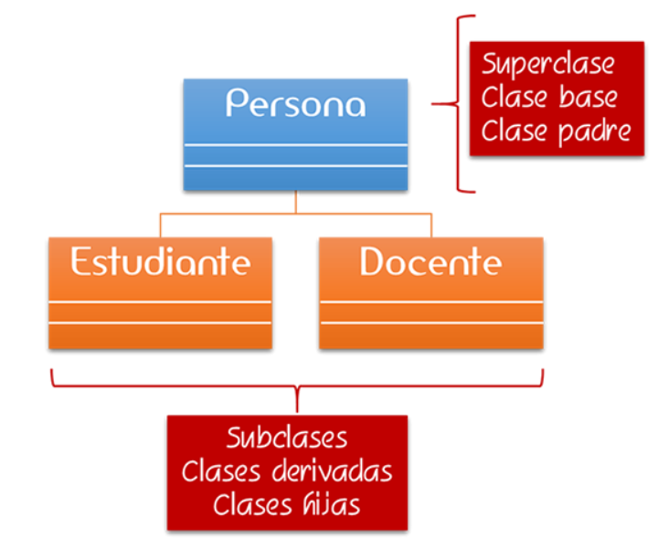
Herencia
El concepto importante asociado con una jerarquía de clases es la noción de herencia de clases, mediante la cual una subclase hereda elementos (atributos y / o métodos, excepto el constructor) de sus superclases.
Nota
Los atributos y métodos declarados como private se dice que no se heredan porque su visibilidad es privada y no se puede acceder desde la clase hija, pero si son heredados.
Reutilización de código
Un término muy usado en herencia es reutilización. Como el propio nombre dice, reutilizar el código repetido en los programas. Es un mecanismo para reutilizar el código existente cuando creamos clases heredadas.
Para ilustrar cómo funciona la herencia pensemos en un framework para crear programas en sistemas operativos como puede ser Windows, y nos ofrece la clase Boton para ejecutar acciones por parte del usuario, si deseamos tener un botón en nuestra aplicación que siempre que se pulse se oiga un pitido, no creamos un botón nuevo desde el principio, creamos el BotonSonido que herede del Boton general del framework que hereda todas sus características y que amplio con la nueva funcionalidad. De esta forma, no tengo que crear de cero un nuevo botón con todas las características ya programadas.
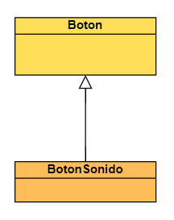
Herencia simple¶
En Java, solo se puede heredar de una clase. A esto se le llama herencia simple. Aunque algunos lenguajes de programación permiten que una clase hija herede de más de una clase padre. A esto se le llama herencia múltiple. Con la herencia múltiple, a veces es difícil saber qué padre contribuyó con qué características al hijo. Java evita estos problemas mediante el uso de herencia simple.
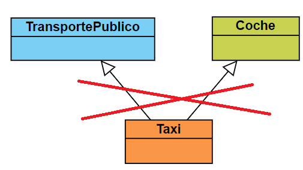
Una clase padre si puede tener múltiples hijos.
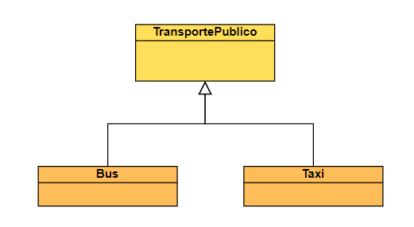
Sintaxis herencia en Java - extends¶
La sintaxis para heredar de una superclase es:
public class Child extends Parent {
// los nuevos miembros y constructores de la clase hija van aquí
}
Los miembros (variables y métodos) de la clase padre se incluyen automáticamente en el hijo por herencia. Si se quieren agregar miembros adicionales en la clase hija se hace en su definición de clase.
Características de las clases derivadas¶
-
Una clase derivada hereda de la clase base sus componentes (atributos y métodos).
-
Los constructores no se heredan. Las clases derivadas deberán implementar sus propios constructores.
-
Una clase derivada puede acceder a los miembros públicos y protegidos de la clase base como si fuesen miembros propios.
-
Una clase derivada no tiene acceso a los miembros privados de la clase base. Deberá acceder a través de métodos heredados de la clase base.
-
Si se necesita tener acceso directo a los miembros privados de la clase base se deben declarar protected en lugar de private en la clase base.
-
Una clase derivada puede añadir a los miembros heredados, sus propios atributos y métodos (extender la funcionalidad de la clase).
-
También puede modificar los métodos heredados (especializar el comportamiento de la clase base).
-
Una clase derivada puede volver a declarar un atributo heredado (atributo public o protected en la clase base). En este caso, el atributo de la clase base queda oculto por el de la clase derivada
-
Una clase derivada puede, a su vez, ser una clase base, dando lugar a una jerarquía de clases.
Modificadores de acceso en Java¶
Una clase derivada podrá acceder a los miembros de su padre según el modificador
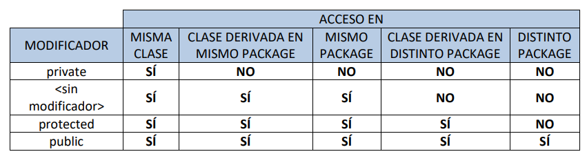
Constructores y herencia en Java. Constructores en clases derivadas¶
Los constructores no se heredan. Cada clase derivada tendrá sus propios constructores. La clase base es la encargada de inicializar sus atributos. La clase derivada se encarga de inicializar solo los suyos. Cuando se crea un objeto de una clase derivada se ejecutan los constructores en este orden:
- Primero se ejecuta el constructor de la clase base.
- Después se ejecuta el constructor de la clase derivada.
public class Persona {
private String nif;
private String nombre;
public Persona() {
System.out.println("Ejecutando el constructor de Persona...");
}
/* Resto de métodos */
}
public class Alumno extends Persona{
private String curso;
public Alumno() {
System.out.println("Ejecutando el constructor de Alumno...");
}
/* Resto de métodos */
}
Si creamos una instancia de Alumno
Alumno pepito=new Alumno();
Muesta por pantalla
Ejecutando el constructor de Persona...
Ejecutando el constructor de Alumno...
Ejemplo clase Animal¶
Vamos a crear una clase base Animal que tendrá una serie de características comunes para todos los animales como puede ser, nombre, peso, tamaño, etc.
public class Animal {
private String name;
private int size;
private int weight;
public Animal(String name, int size, int weight) {
this.name = name;
this.size = size;
this.weight = weight;
System.out.println("Ejecutando el constructor de Animal...");
}
//getters y setters
}
Ahora queremos crear un tipo de animal Dog que contendrá todas las características (atributos y métodos) de la clase Animal:
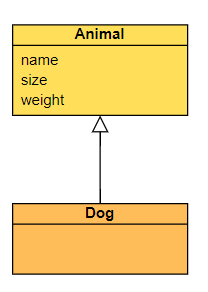
public class Dog extends Animal {
}
Cuando creamos una subclase, necesitamos llamar al constructor de la superclase para inicializarla, ya que hereda de ella. Así que tendremos que crear el constructor en la clase Dog que llame dentro al constructor de la superclase (Animal):
public class Dog extends Animal {
public Dog(String name, int size, int weight) {
//llamada al constructor de Animal
super(name, size, weight);
}
}
Al crear una clase hija Dog que hereda de la clase padre Animal, lo que estamos haciendo es heredar todo su comportamiento (atributos y métodos) y además nos permite añadir atributos específicos y únicos para esa clase hija que son particulares de los perros y no comunes o aplicables a todos los animales.
Super¶
La palabra reservada super se utiliza para llamar al constructor de la clase de la que estamos heredando, es decir, llamar a la clase padre o superclase. En nuestro caso, para invocar al constructor de la superclase Animal.
Esto nos permite inicializar la clase Animal, ya que Dog es una clase derivada que se basa en ella.
Importante
- La primera línea dentro del constructor de la clase hija debe ser la llamada al constructor padre con super().
public Persona{ public String nombre; } public class Alumno extends Persona{ String curso; public Alumno(String nombre, String curso) { super(); //esta instrucción se ejecuta siempre. No es necesario escribirla this.nombre=nombre; this.curso=curso; System.out.println("Ejecutando el constructor de Alumno"); } } - Si no se especifica explícitamente entonces el compilador Java llama por defecto a super();, es decir, al constructor por defecto (sin argumentos) de la clase padre
public class Alumno extends Persona{ String curso; //no es necesario llamar a super(), lo llama el compilador public Alumno(String nombre, String curso) { this.nombre=nombre; this.curso=curso; System.out.println("Ejecutando el constructor de Alumno"); } } - Si se proporciona un constructor con parámetros en una clase, el compilador de Java no creará automáticamente el constructor sin parámetros. El siguiente código es erróneo:
El constructor de Alumno tendría que ser como sigue
public Persona{ public String nombre; public Persona(String nombre) { this.nombre = nombre; System.out.println("Ejecutando el constructor de Persona.."); } } public class Alumno extends Persona{ String curso; //ERROR: es necesario llamar al constructor del padre public Alumno(String nombre, String curso) { this.nombre=nombre; this.curso=curso; System.out.println("Ejecutando el constructor de Alumno"); } }public Alumno(String nombre, String curso) { Persona(nombre); this.curso=curso; System.out.println("Ejecutando el constructor de Alumno.."); } }
En la clase hija vamos a crear algunos campos específicos para los perros como ojos, piernas, etc. Porque recuerda que no todos los animales tienen piernas u ojos pero si todos los perros.
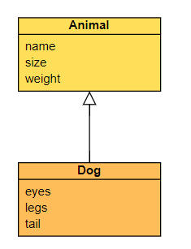
Además de los campos que se necesitan para crear un objeto Animal, también hay que inicializar los campos propios de la clase Dog en el constructor:
public class Dog extends Animal {
private int eyes;
private int legs;
private int tail;
public Dog(String name, int size, int weight, int eyes, int legs, int tail) {
super(name, size, weight);//llama al constructor de Animal
this.eyes = eyes;
this.legs = legs;
this.tail = tail;
System.out.println("Ejecutando el constructor de Dog...");
}
}
En la clase base, vamos a añadir comportamiento, que será común para todos los animales: comer y moverse
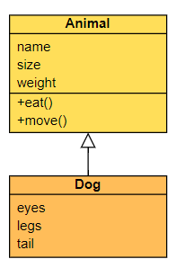
public class Animal {
private String name;
private int size;
private int weight;
public Animal(String name, int size, int weight) {
this.name = name;
this.size = size;
this.weight = weight;
System.out.println("Ejecutando el constructor de Alumno...");
}
public void eat() {
System.out.println("comiendo animal..."+name);
}
public void move() {
System.out.println("se mueve el animal..."+name);
}
}
Al hacer esto, y crearlos como public (protected también serviría), significa que ahora están disponibles en la clase Dog automáticamente. Es decir, el método eat y move se hereda a la clase Dog.
public static void main(String[] args) {
Dog dog = new Dog("Maxi", 2, 5, 2, 4, 1);
//llamamos al método eat que existe en la clase padre
dog.eat();
}
muestra
comiendo animal...Maxi
Sobrescribir métodos(@Override)¶
La herencia nos aporta la opción de la sobrescritura de métodos. Es decir, redefinir los métodos de una clase padre en las clases hijas con su propia funcionalidad.
Llamar a método en una clase derivada¶
Importante
Cuando se invoca un método de una clase en una jerarquía de clases sucede lo siguiente
- Se busca en su clase el método correspondiente.
- Si no se encuentra, se busca en su clase base.
- Si no se encuentra, se sigue buscando hacia arriba en la jerarquía de clases hasta que el método se encuentra.
- Si al llegar a la clase raíz el método no se ha encontrado se producirá un error.
Por ejemplo, en la clase Dog podemos sobrescribir el método eat() con una funcionalidad más específica.
public class Dog extends Animal {
private int eyes;
private int legs;
private int tail;
public Dog(String name, int size, int weight, int eyes, int legs, int tail) {
super(name, size, weight);//llama al constructor de Animal
this.eyes = eyes;
this.legs = legs;
this.tail = tail;
System.out.println("Ejecutando el constructor de Dog...");
}
@Override
public void eat(){
System.out.println("El dog "+name+" está comiendo...");
}
}
Sobrecarga vs Sobrescritura¶
Sobrecarga
No confundir con el concepto de sobrecarga en la que en una clase tenemos varios métodos con el mismo nombre pero diferentes parámetros
//método sumar 2 parámetros
public int sumar(int m1, int m2) {
return m1+m2;
}
//método sumar 3 parámetros
public int sumar(int m1, int m2, int m3) {
return m1+m2+m3;
}
IntelliJ y Override¶
El IntelliJ nos ofrece un atajo para sobrescritura de métodos.
Botón derecho → Generate...
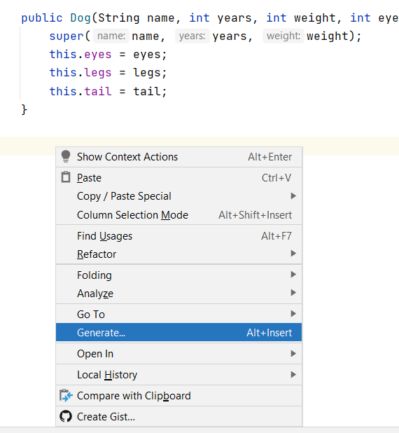
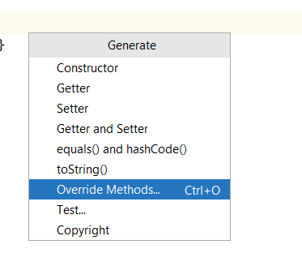
IntelliJ nos muestra todos los métodos que están en la clase Animal y podemos sobrescribir:
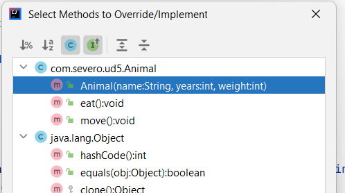
Si seleccionamos el método eat(), tenemos:
public class Dog extends Animal {
private int eyes;
private int legs;
private int tail;
public Dog(String name, int size, int weight, int eyes, int legs, int tail) {
super(name, size, weight);
this.eyes = eyes;
this.legs = legs;
this.tail = tail;
}
@Override
public void eat() {
super.eat();//Código que se crea automáticamente y llama al método eat de la clase padre
}
}
Ahora la clase hija Dog tiene su propio método eat() con código específico para esta clase.
public class Dog extends Animal {
private int eyes;
private int legs;
private int tail;
public Dog(String name, int years, int weight, int eyes, int legs, int tail) {
super(name, years, weight);
this.eyes = eyes;
this.legs = legs;
this.tail = tail;
}
//Método privado solo de la clase Dog
private void chew() {
}
@Override
public void eat() {
System.out.println("El dog "+name+" está comiendo...");
}
}
Clases Finales¶
Si queremos evitar que una clase tenga clases derivadas debe declararse con el modificador final delante de class:
public final class Dog{
…
}
Esto la convierte en clase final. Una clase final no se puede heredar. Si intentamos crear una clase derivada de Dog se producirá un error de compilación:
//producirá un error de compilación
public class Chiguagua extends Dog{
…
}